图片仅供参考，展示产品类型。
吊灯与枝形吊灯
中世纪现代风吊灯
金色金属臂配玻璃球的中世纪风(Sputnik 风格)吊灯,线条纤细,适合客厅与餐厅。
吊灯延续 20 世纪 50/60 年代的造型语言,以放射状金属臂和金色玻璃球呈现轻盈的雕塑感。
技术参数
| 材质 | 铝/金属骨架,玻璃球 |
|---|---|
| 尺寸 | D70×H40 厘米 |
| 电压 | 90–260 V |
| 颜色/表面 | 金色 |
| 海关编码（HS） | 94051990 |
欧盟标准与法规
EN 60598-1 / LVD 2014/35/EU灯具通用安全要求与试验；低电压指令EMC 2014/30/EU电磁兼容(如 EN IEC 55015、EN 61547)RoHS 2011/65/EU限制电子电气设备中有害物质(EU) 2019/2020光源及独立控制装置的生态设计(能效标签 (EU) 2019/2015)ElektroG / GPSR (EU) 2023/988WEEE 注册(stiftung ear)及含欧盟责任人的产品安全要求
本类别其他产品

奢华水晶吊灯，金色，直径80厘米 （K9水晶, LED）金色铁艺吊灯，配切割K9水晶挂件，适用于客厅、门厅和酒店空间。
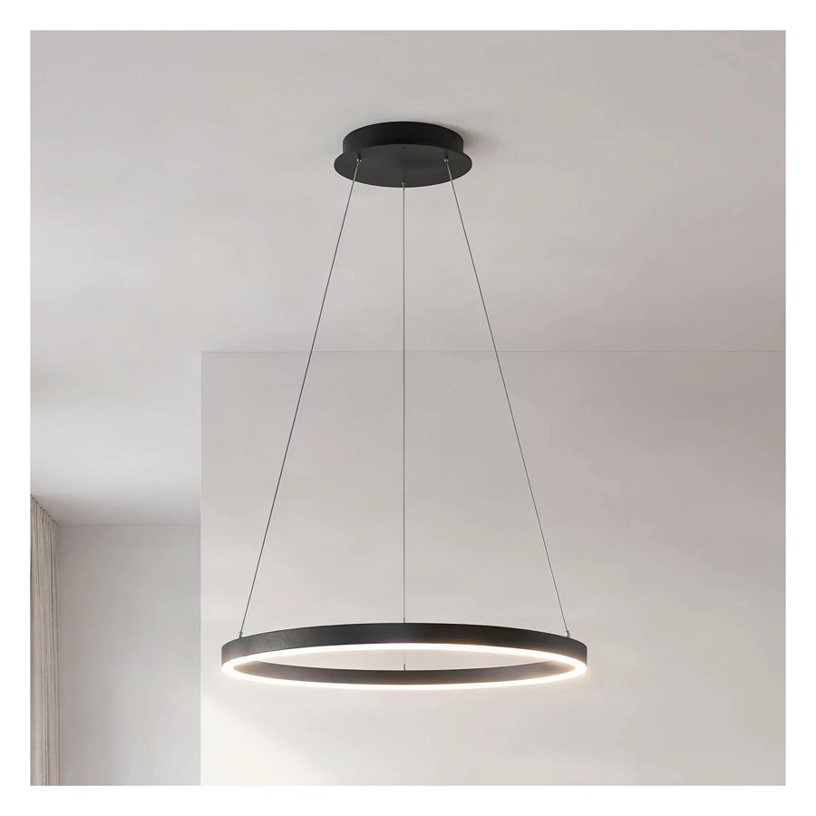
现代极简LED环形吊灯，直径60厘米，铝制简约铝制环形LED吊灯，吊线可调高度，适用于餐桌、厨房和起居空间。

斯普特尼克吊灯 6灯，铁艺/玻璃现代斯普特尼克吊灯，六臂配玻璃灯体，中世纪现代风格。
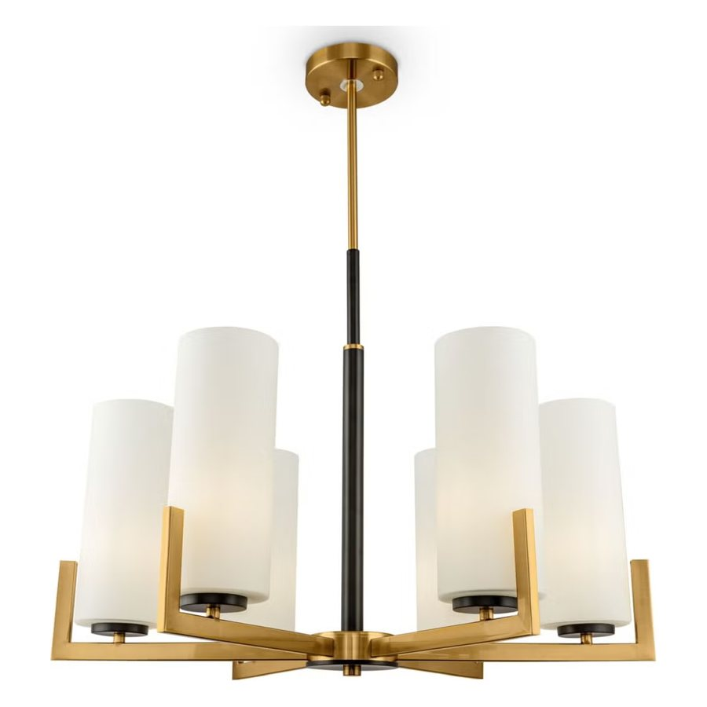
鼓形灯罩吊灯，贝壳/水晶灯罩，金色大型吊灯，圆筒鼓形灯罩由水晶与贝壳制成，适用于楼梯间、大堂和餐厅。

帝政风格吊灯，K9水晶雨滴挂件，11灯E14，金色/镀铬经典帝政风格吊灯，水晶挂件，11个E14灯座，适用于客厅和餐厅。
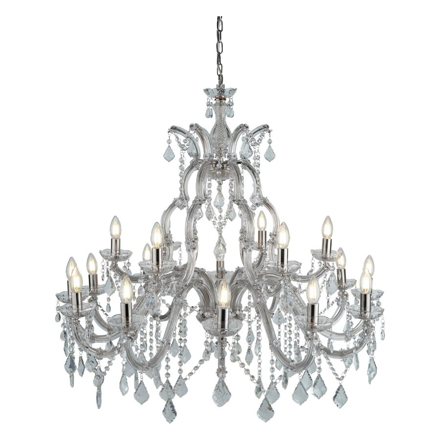
玛丽亚·特蕾莎水晶吊灯，大型 （门厅/工程），金色大型玛丽亚·特蕾莎吊灯，水晶灯体，适用于酒店门厅、别墅和宴会空间。
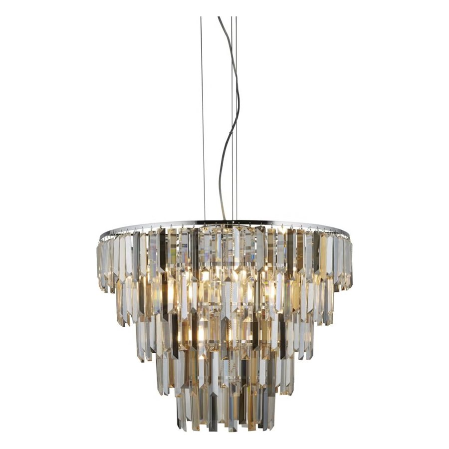
多层水晶长吊灯 （楼梯间/门厅），LED多层水晶长吊灯，不锈钢吸顶底座，适用于楼梯间、别墅和大堂。
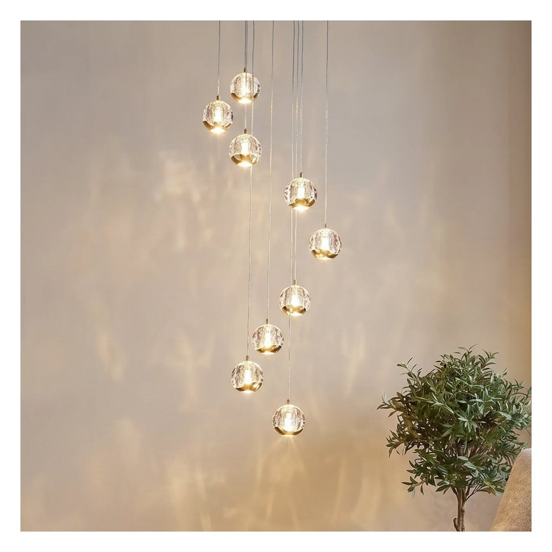
瀑布式吊灯，K9水晶，不锈钢，LED （楼梯间/中庭）瀑布造型长款水晶吊灯，适用于挑高楼梯间和中庭，多种尺寸与颜色。

厨房岛台/餐桌用线性吊灯细长金属LED吊灯，以一条连续光带照亮厨房岛台或餐桌。
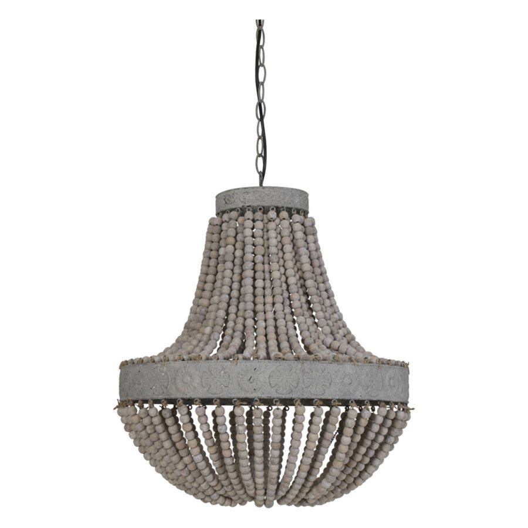
珠串与木珠吊灯铁艺骨架配做旧木珠串的吊灯，适合乡村与波西米亚风格的客厅和餐厅。
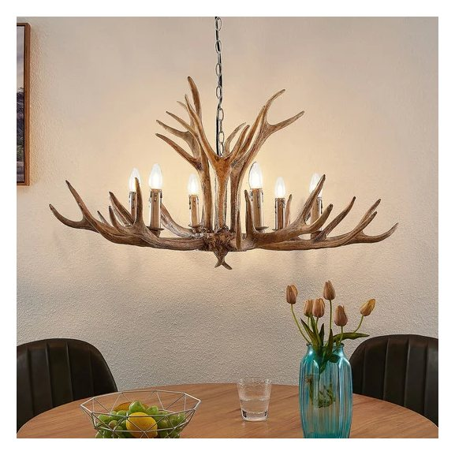
树脂鹿角吊灯以树脂鹿角和铁架制成的乡村风吊灯，适合山间木屋、度假屋与乡村风空间。

鸟笼与灯笼吊灯多头铁艺鸟笼吊灯，配麻绳细节，适合工业风与乡村风。

球形与玻璃球吊灯铁架配玻璃球的现代吊灯，北欧简约并带水晶细节。

蜡烛式吊灯经典蜡烛式吊灯：铁艺灯臂配烛形灯泡，搭配K9水晶、玻璃与布艺灯罩。
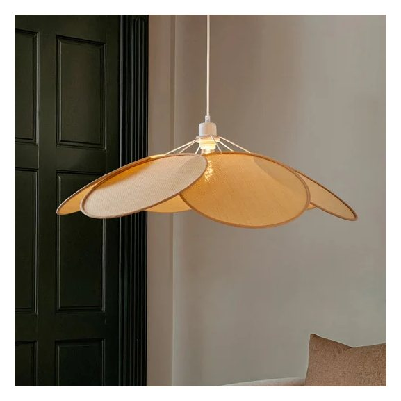
藤编波西米亚吊灯手工编织藤制吊灯，铁架并可选布艺灯罩，适合波西米亚与自然风格。

轮辐/马车轮吊灯大型圆形马车轮吊灯，金属框架配玻璃管，适合餐桌、玄关与乡村风空间。
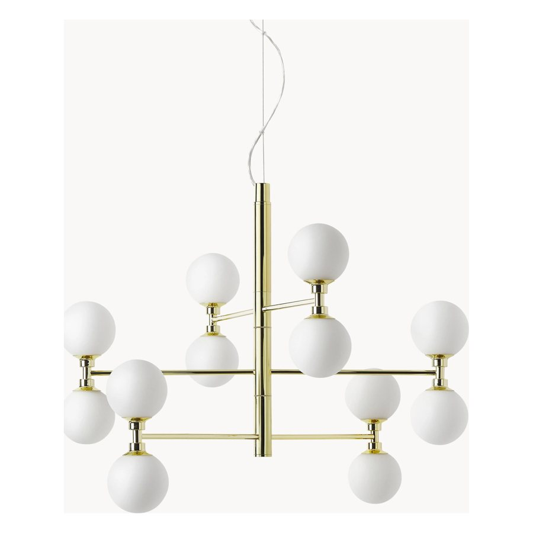
气泡玻璃吊灯金属骨架上的玻璃气泡与玻璃球组合吊灯,适合餐厅、楼梯间和大堂的装饰焦点。

手工吹制玻璃吊灯带手工吹制灯罩与 LED 光源的手工玻璃吊灯,适合门厅、楼梯间和餐厅,具有独一无二的质感。
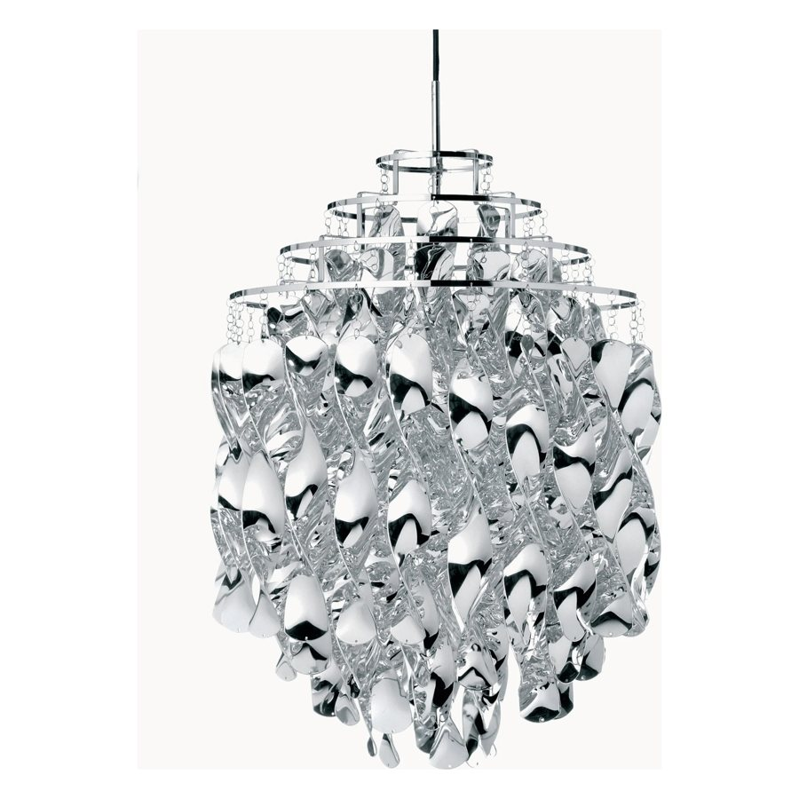
流苏链条吊灯带垂坠铝链与流苏的吊灯,金色或黑色,轻盈流动,适合门厅、婚礼场地和别墅。
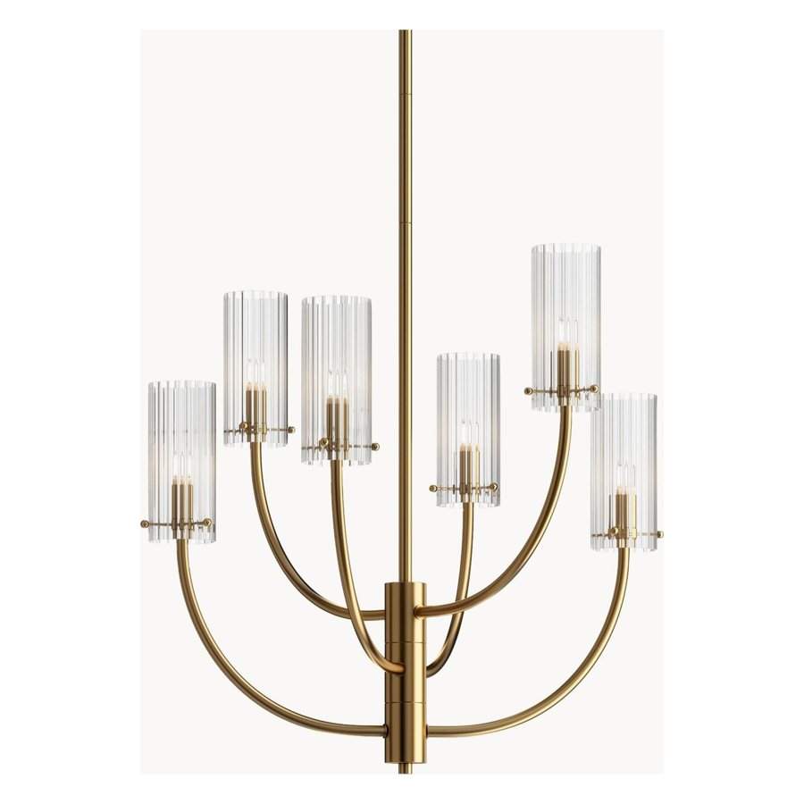
装饰艺术风格吊灯黄铜与雪花石膏材质的装饰艺术风格 LED 吊灯,几何感优雅,适合卧室、大堂和精品酒店。

工业风管道吊灯带钢/铝管结构与 LED 的极简 Loft 吊灯,适合咖啡馆、Loft 住宅与办公空间。
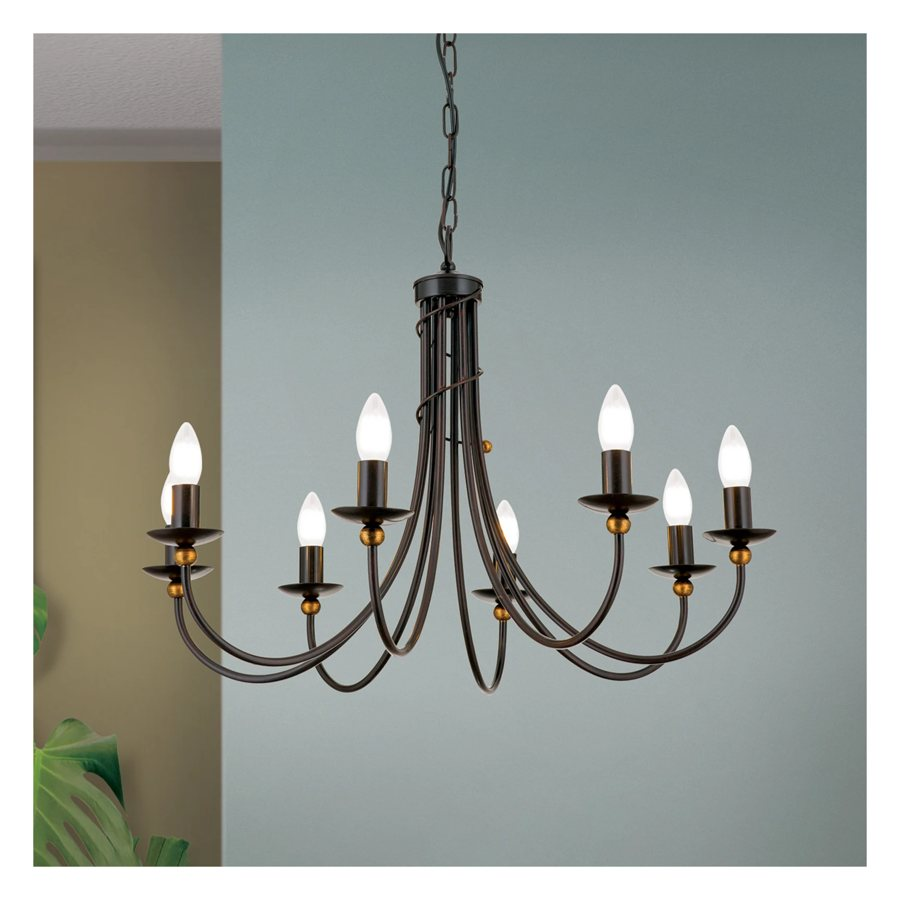
乡村铁艺吊灯带弧形灯臂的黑色铁艺蜡烛式吊灯,适合乡村、木屋和餐饮空间。

动态平衡式吊灯带可动铁臂的动态平衡式吊灯,北欧风格的雕塑感装饰焦点。
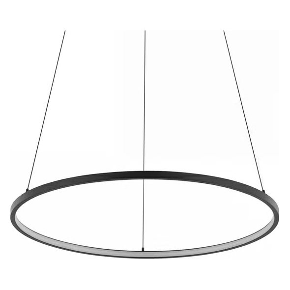
LED圆环吊灯 （铝+亚克力, 1–3环）极简圆环吊灯，内置LED，直径 40–100 cm 可选。

波浪形LED吊灯 （亚克力, 曲线光带）亚克力波浪形LED吊灯，光带柔和起伏。

几何方盒吊灯 （铁艺框架, 4头, 黑色/黄铜色）几何铁艺方盒灯笼吊灯，附带四颗LED灯泡。
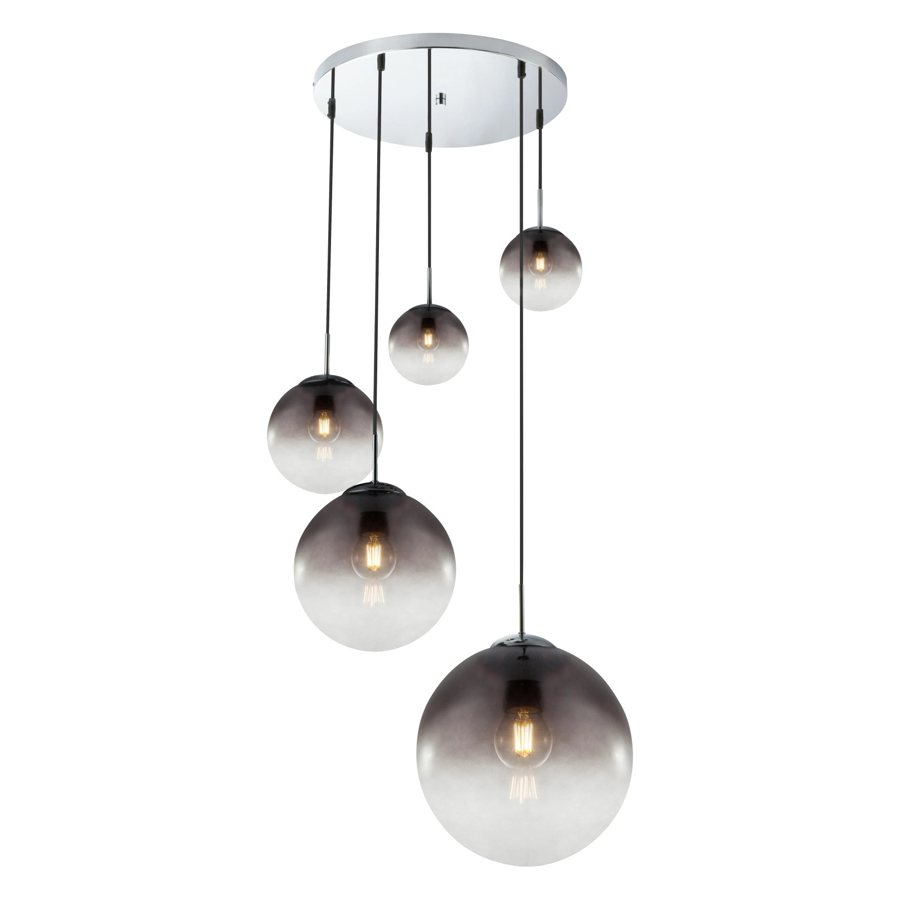
玻璃球组合吊灯 （多头, 金色）金色框架配组合玻璃球的多头吊灯，直径 60/80/100 cm。

银杏叶吊灯 （铁艺+水晶, E14–E27）银杏叶造型吊灯，铁艺+水晶灯体，标准灯座。

蒲公英/烟花吊灯 （金色, 水晶, Ø50 cm）金色放射状 Sputnik 吊灯，配水晶元素，Ø50 cm，高 150 cm。
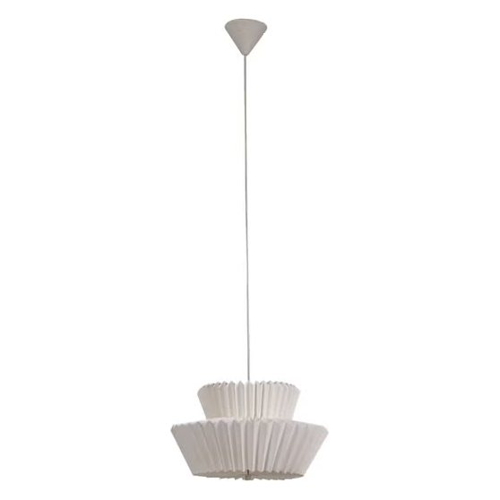
纸质吊灯“宣纸灯笼” （Ø40–60 cm, E27）手工纸灯笼，铁艺框架，侘寂风，Ø40/50/60 cm，E26/E27。
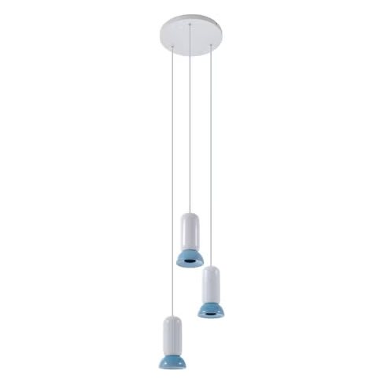
陶瓷/瓷质吊灯“玉兰花瓣” （奶油色, 楼梯间）奶油色陶瓷花瓣吊灯，适用于挑高空间和楼梯间。
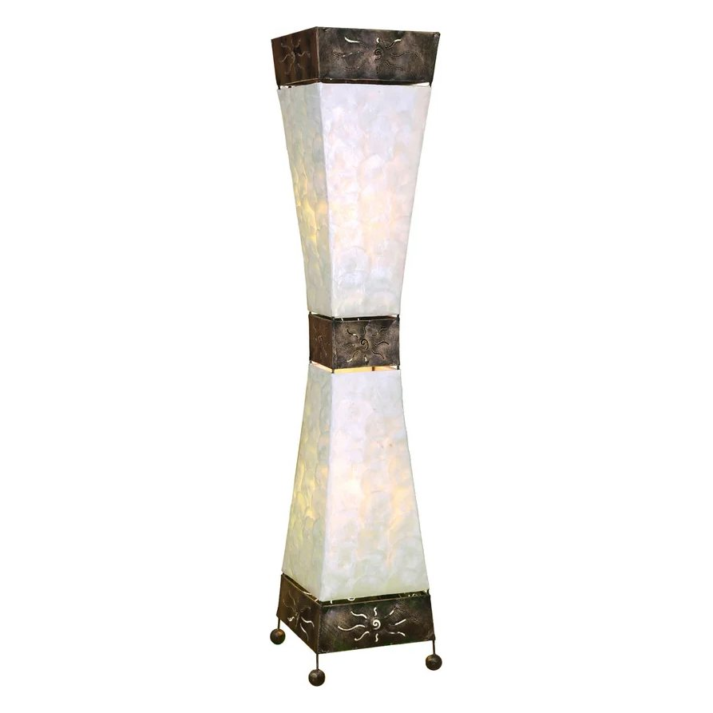
贝壳/卡皮兹吊灯金属框架搭配切割卡皮兹贝壳片的吊灯,光线柔和,带珍珠母光泽。
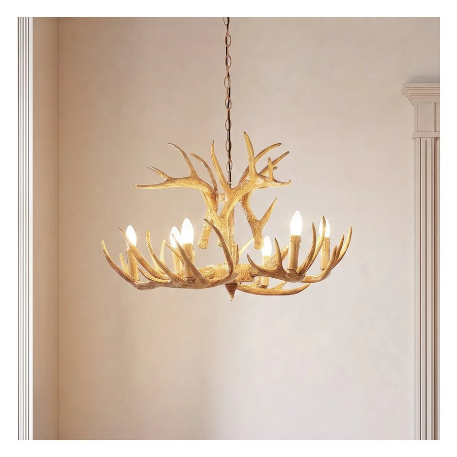
仿角/骨质吊灯带树脂鹿角灯臂的多头吊灯,呈角/骨质外观,配金色框架。

皮革包裹吊灯带皮革元素、玻璃球罩和金属部件的现代轻奢风吊灯。
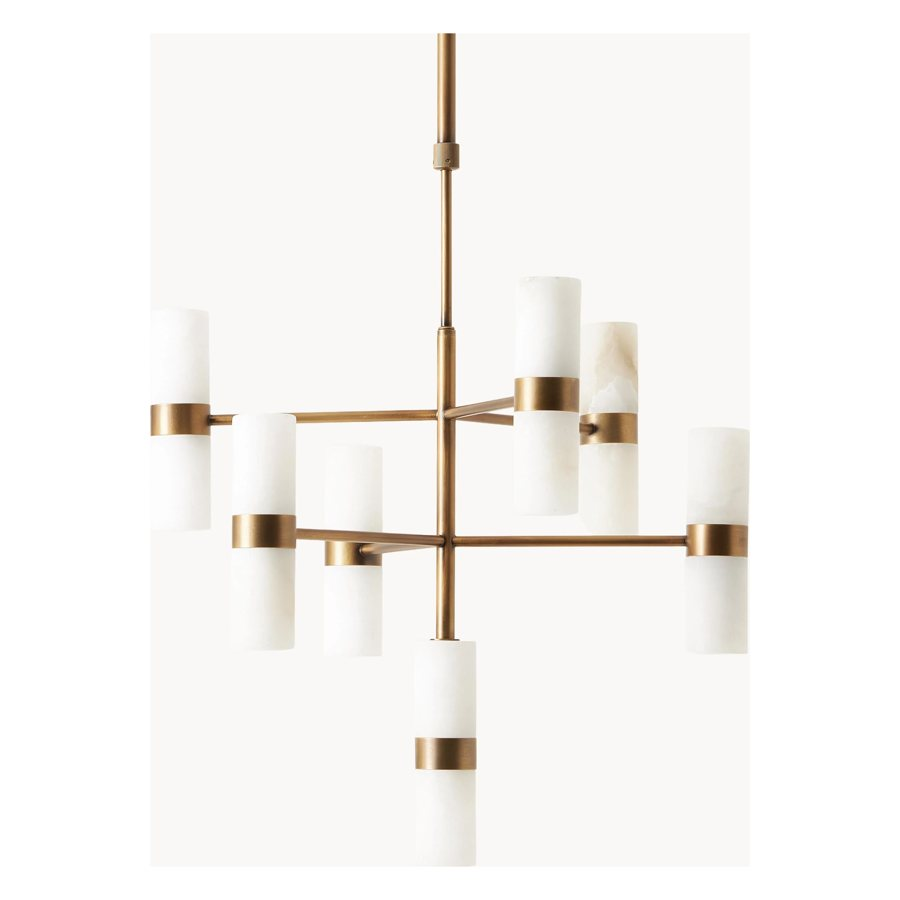
雪花石膏吊灯铜质框架配雪花石膏灯罩的多头吊灯,光线温暖柔和。

新古典主义吊灯镀金铁架搭配水晶元素的新古典风格吊灯。
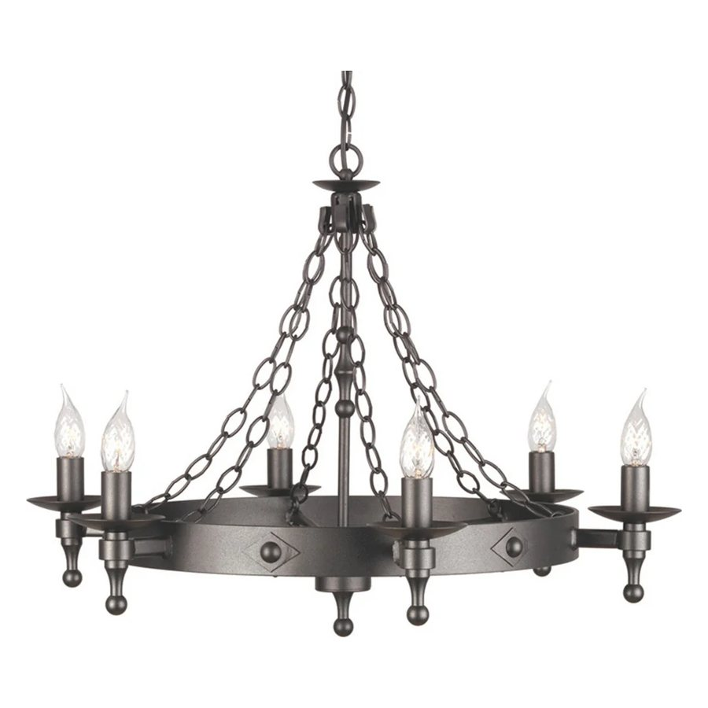
哥特式吊灯中世纪哥特风格的黑色锻铁蜡烛式吊灯。
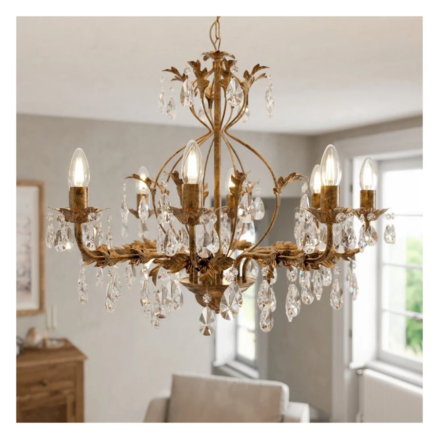
巴洛克吊灯巴洛克风格水晶吊灯,铁架,可选 E14/E27 灯座或 LED 灯带。
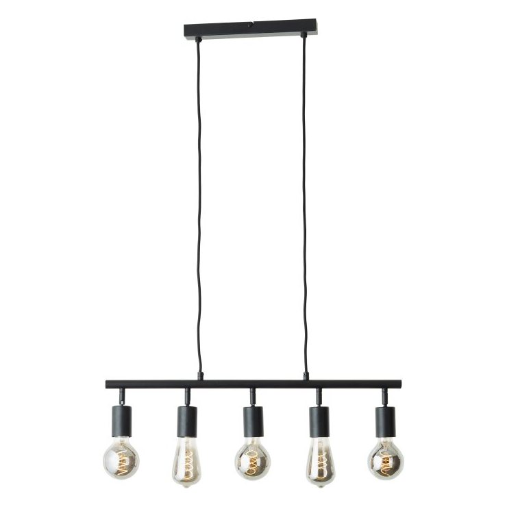
蒂凡尼玻璃吊灯铁架配蒂凡尼风格彩色玻璃的仿古吊灯。

亚克力 （PMMA）LED吊灯，黄铜色铁艺灯架现代风格吊灯，亚克力装饰件搭配黄铜色铁艺灯架，适用于餐厅与客厅。

水泥树脂LED吊灯 （混凝土风格），18 cm

麻绳吊灯，铁艺轮形灯架，E27，复古航海风圆形吊灯，麻绳搭配黑色铁艺轮圈，复古海洋风，适合咖啡馆、餐厅与大堂。
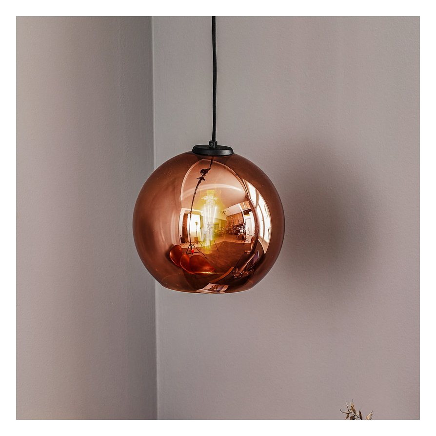
镜面玻璃吊灯，银色镜面玻璃球，LED

炫彩幻影吊灯，不锈钢/水晶，LED，100 cm线性吊灯，炫彩花瓣造型，提供八种颜色，长度100/120/150 cm。
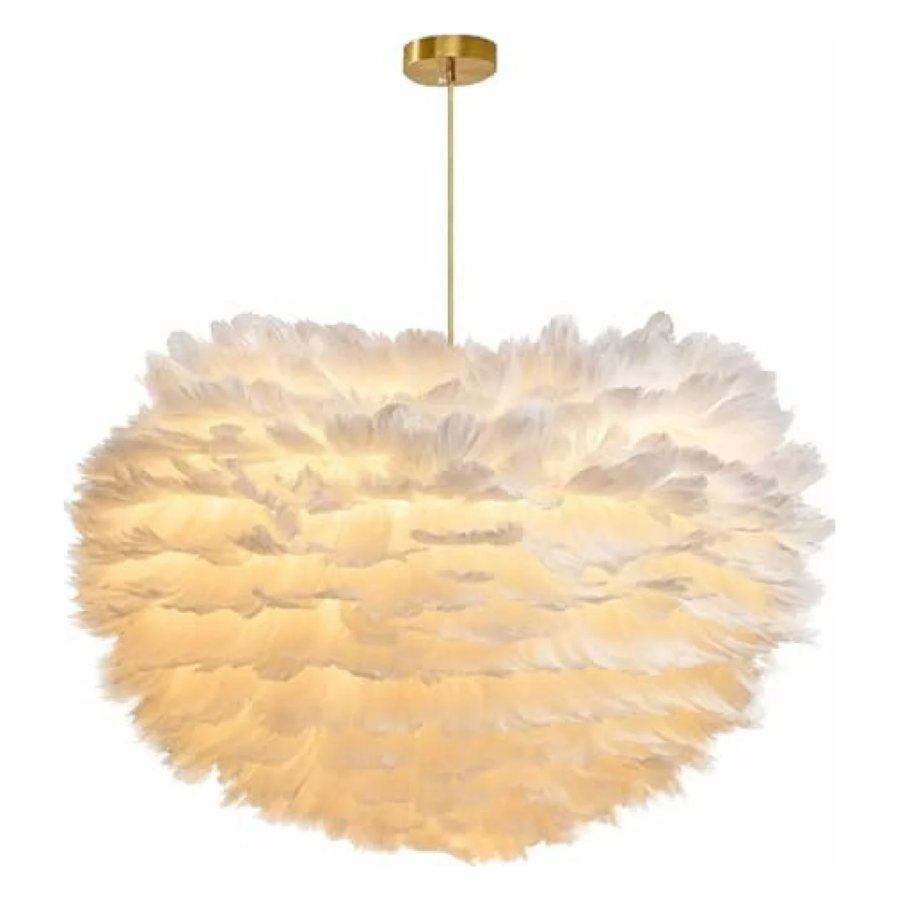
羽毛吊灯，白色羽毛，Ø30 cm，LED浪漫风格白色羽毛吊灯，适用于卧室与餐厅。

丝绸灯罩飞碟形吊灯，Ø30/40 cm，LED意大利丝绸搭配铁艺框架的吊灯，光线柔和，侘寂风格。
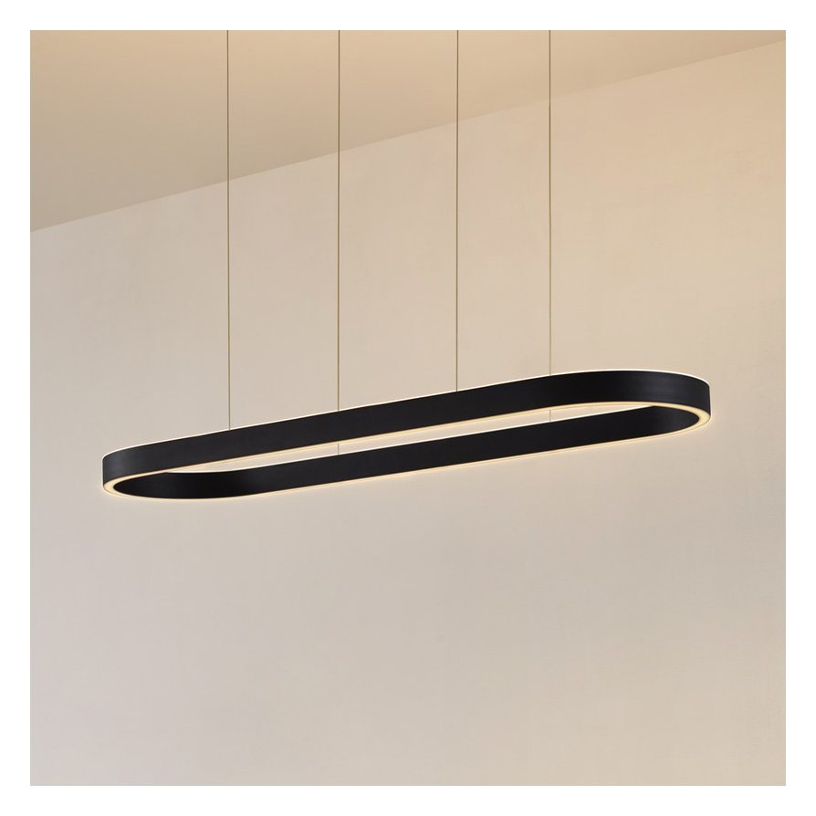
App控制智能吊灯，金色铝材，100×100×50 cm大型铝制大堂吊灯，支持App控制；

RGBW 变色吊灯 （WiFi、App 与语音控制、可调光）现代 LED 吊灯，支持 RGB 变色与可选白光色温，可通过 WiFi App 和语音助手控制。

太阳能户外吊灯 （太阳能板、PIR 感应、遥控）适用于有遮盖户外空间的无线吊灯：太阳能板、4000 mAh 电池与人体感应。
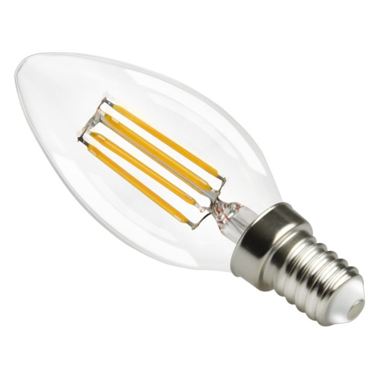
吊灯用 LED 灯丝蜡烛灯 E14 （C35, 可调光）透明 C35 蜡烛灯泡，LED 灯丝，E14 灯头，暖白光，适合吊灯使用。

吊灯替换水晶挂件 （棱镜套装, 20 件, K9 水晶玻璃）K9 水晶玻璃棱镜套装，用于更换或升级吊灯挂件。
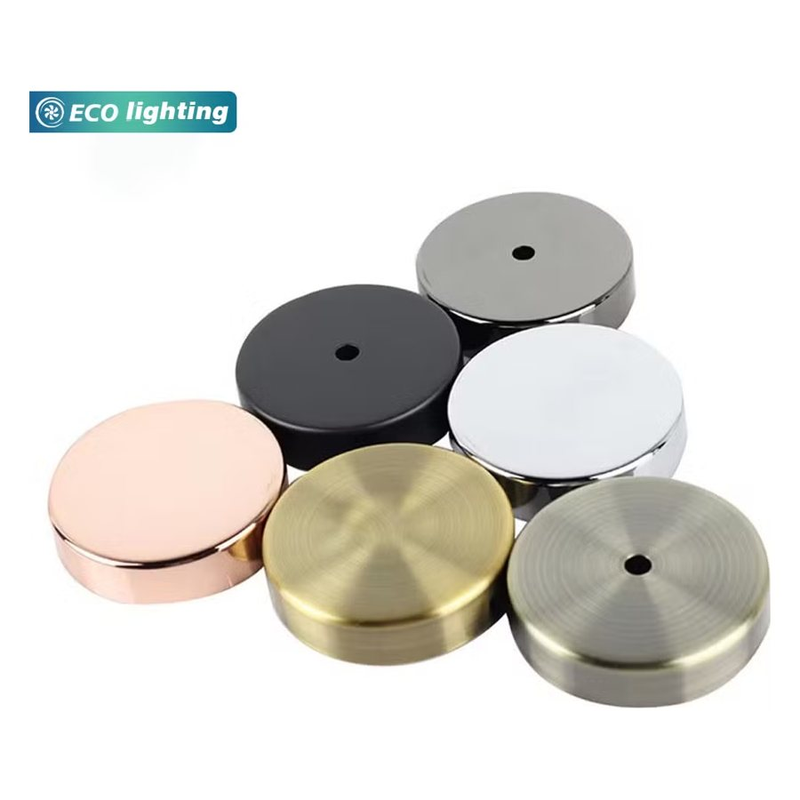
吊线灯用金属吊盘 （天花底座, 多色）圆形铁制吊盘，螺丝固定，适用于吊灯及可调高度的吊线套件。

吸顶灯无线调光套装 （接收调光器加遥控器）无线可控硅调光器配遥控器，可藏在吊盘后方，让现有灯具实现调光。

锥形吊灯,铁艺,黑色,E27简约铁艺锥形灯罩吊灯,适用于餐桌与餐饮。
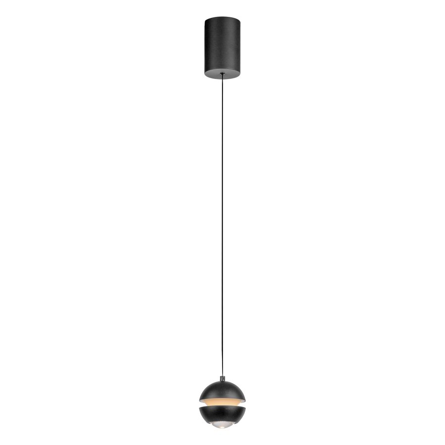
LED灯管吊灯,可调光,铝制,10–40W集成LED的纤细圆筒吊灯,适合岛台与餐桌。

大理石吊灯,水泥/大理石设计,餐桌大理石/水泥质感吊灯,适用于家居与酒店。

烟灰玻璃吊灯,圆形,餐厅带烟灰玻璃灯罩的圆形吊灯。

铝制LED吊灯,现代,客厅带纤细灯罩的现代铝制LED吊灯。

GU10轨道射灯,可调角度,铝制用于轨道系统的可调铝制GU10/MR16射灯。
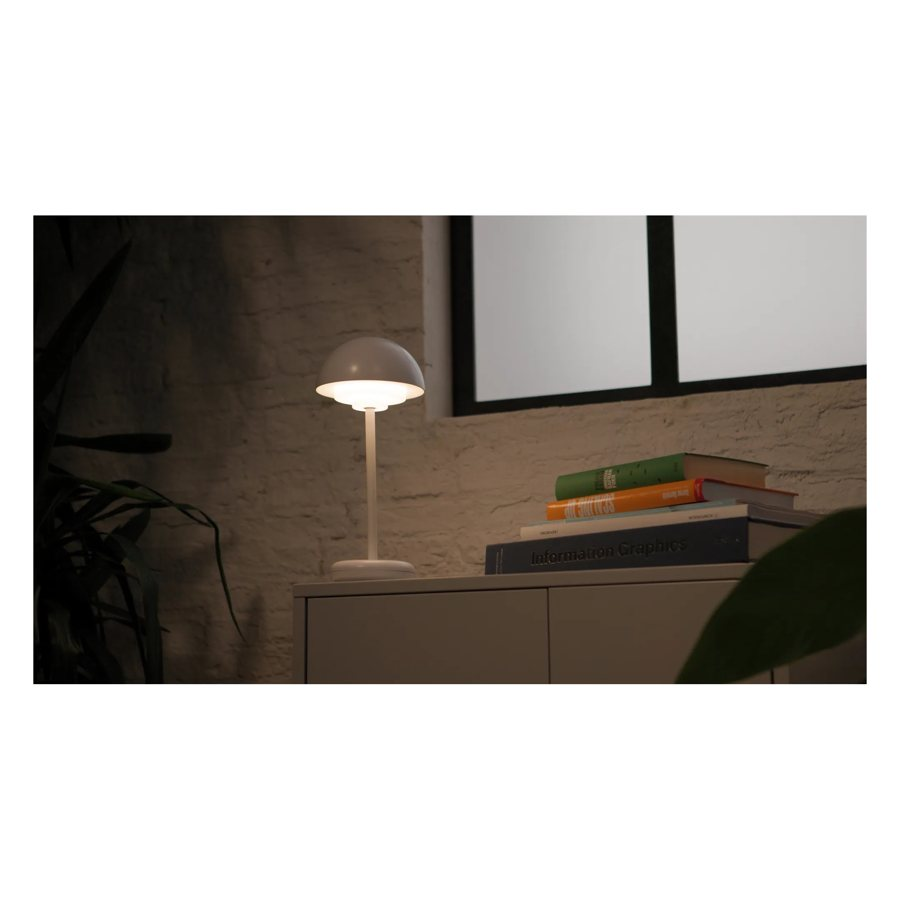
褶皱布艺灯罩LED灯,卧室带褶皱布艺灯罩的复古LED灯,用于床头。
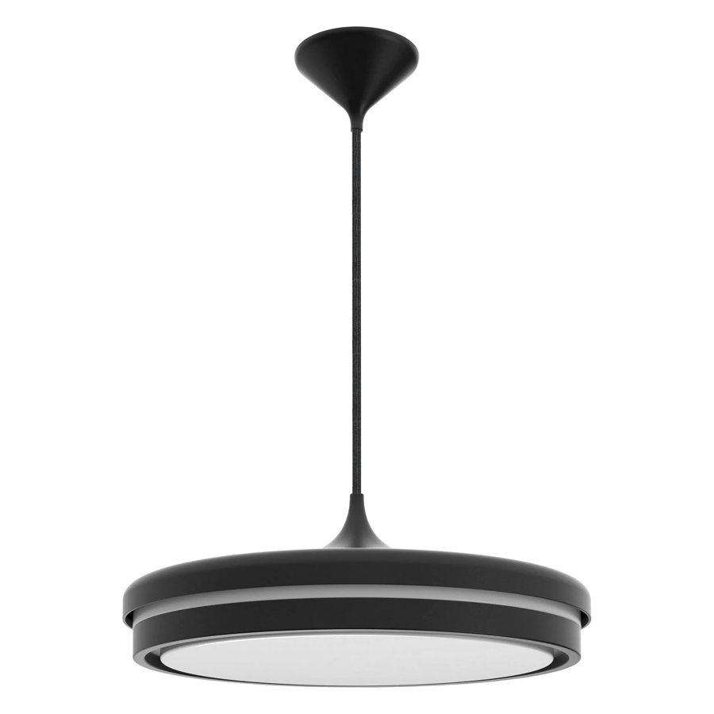
UFO金属LED吊灯,圆形,北欧圆形扁平金属UFO形LED吊灯。